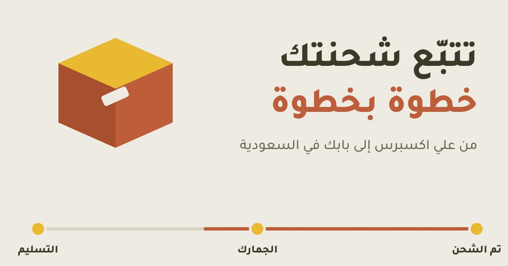

كيف تتتبع شحنة علي اكسبرس إلى السعودية خطوة بخطوة

الشحنة الدولية تمر بعدة محطات قبل أن تصل بابك: البائع، ثم شركة الشحن، ثم الجمارك، ثم البريد المحلي. إذا فهمت هذه المراحل عرفت متى تنتظر ومتى تتحرك.
أين أجد رقم التتبع؟
- افتح حسابك في علي اكسبرس (التطبيق أو الموقع).
- ادخل على طلباتي ثم اختر الطلب المطلوب.
- ابحث عن قسم التتبع أو معلومات الشحن، وستجد حالة الشحنة ورقم التتبع.
قد يتأخر ظهور الرقم يوماً أو أكثر بعد أن تتغير حالة الطلب إلى «تم الشحن»، وهذا طبيعي.
كيف أتتبع شحنتي؟
- صفحة الطلب في علي اكسبرس: أسهل طريقة وتجمع التحديثات في مكان واحد.
- مواقع التتبع العامة: الصق رقم التتبع في Cainiao أو 17TRACK لتري تفاصيل أكثر أحياناً.
- بعد وصولها السعودية: تابعها في صفحة تتبع البريد السعودي (سبل) أو تطبيق SPL Online، وتصلك رسالة نصية عند وصولها.
معاني حالات الشحنة
الأسماء تختلف بحسب شركة الشحن، لكن المعنى العام واحد:
| الحالة | معناها |
|---|---|
| تم الدفع / قيد التجهيز | البائع يجهّز الطلب ولم يُسلَّم لشركة الشحن بعد. |
| تم الشحن | سلّم البائع الشحنة لشركة الشحن، وقد يتأخر ظهور رقم التتبع. |
| في الطريق (In Transit) | الشحنة بين محطات النقل، وقد لا تظهر تحديثات كل يوم. |
| وصلت إلى بلد الوجهة | وصلت السعودية وتنتظر إنهاء الإجراءات. |
| في الجمارك | قيد التخليص الجمركي، وقد تُحصَّل الضريبة والرسوم حسب قيمة الشحنة. |
| تسليم للبريد المحلي | انتقلت الشحنة لشركة التوصيل أو البريد المحلي داخل السعودية. |
| جاهزة للتسليم / للاستلام من الفرع | راجع رسالة البريد ومكان الاستلام المذكور في التتبع. |
| تم التسليم | سُجّلت الشحنة مسلَّمة، فتأكد من الاستلام الفعلي في اليوم نفسه. |
كم تستغرق الشحنة؟
تختلف المدة بحسب طريقة الشحن التي اخترتها وموقع البائع. أفضل مرجع لك هو تاريخ التسليم المتوقع المكتوب في صفحة طلبك، لا أرقام عامة. وتوقف التتبع عدة أيام لا يعني بالضرورة أن شحنتك ضاعت.
متى أقلق وماذا أفعل؟
- انتظر حتى يقترب تاريخ التسليم المتوقع، فلا تتحرك مبكراً.
- إذا تجاوزت التاريخ أو توقف التتبع طويلاً، راسل البائع واطلب منه فحص الشحنة.
- راجع تاريخ انتهاء حماية المشتري في صفحة طلبك، وافتح النزاع قبله.
- احتفظ بلقطات شاشة للتتبع والمحادثة مع البائع.
الجمارك والضريبة
حسب توضيح هيئة الزكاة والضريبة والجمارك، تُعفى الشحنات الشخصية من الرسوم الجمركية إذا كانت قيمتها شاملة الشحن أقل من 1000 ريال، وتبقى ضريبة القيمة المضافة 15% ورسوم المعالجة. لتقدير التكلفة قبل الدفع استخدم حاسبة الجمارك والضريبة.
ظهرت «تم التسليم» ولم تصلني
- ابحث عند الجيران وحارس المبنى ونقطة الاستلام في العنوان الوطني.
- راجع رسائل البريد والرسائل النصية، وقد يكون الطرد في فرع الاستلام.
- راسل البائع وشركة التوصيل بسرعة، واطلب تفاصيل التسليم.
- إن لم تصل لحل، افتح نزاعاً قبل انتهاء حماية المشتري.
أسئلة شائعة
أين أجد رقم تتبع شحنة علي اكسبرس؟
من حسابك في علي اكسبرس افتح طلباتي ثم الطلب المطلوب، وستجد قسم التتبع أو معلومات الشحن. قد يتأخر ظهور رقم التتبع يوماً أو أكثر بعد تغيّر حالة الطلب إلى تم الشحن.
لماذا لا يتحدّث التتبع منذ أيام؟
هذا شائع في الشحنات الدولية، فقد تنتقل الشحنة بين مراحل لا تُسجَّل فيها مسحات. الأهم أن تقارن الوضع بتاريخ التسليم المتوقع المكتوب في صفحة الطلب.
متى أفتح نزاعاً؟
إذا تجاوزت الشحنة تاريخ التسليم المتوقع أو توقف التتبع طويلاً، تواصل مع البائع أولاً، وافتح النزاع قبل انتهاء مدة حماية المشتري المكتوبة في صفحة طلبك.
كيف أتتبع الشحنة بعد وصولها السعودية؟
بعد تسليمها للبريد المحلي قد يظهر رقم مختلف أو نفس الرقم في موقع البريد السعودي سبل (SPL)، وتصلك رسالة نصية عند وصولها أو جاهزيتها للاستلام.
هل تُفرض جمارك على كل شحنة؟
حسب توضيح هيئة الزكاة والضريبة والجمارك، تُعفى الشحنات الشخصية من الرسوم الجمركية إذا كانت قيمتها شاملة الشحن أقل من 1000 ريال، وتبقى ضريبة القيمة المضافة 15% ورسوم المعالجة. استخدم حاسبة الجمارك والضريبة لتقدير التكلفة.